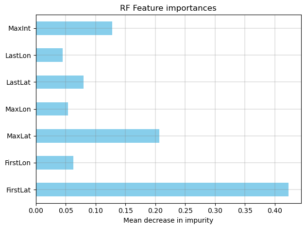

(outlined) North Atlantic Hurricanes#
from pathlib import Path
import pandas as pd
import numpy as np
DATA_FOLDER = Path("..") / "data"
DATA_FILEPATH = DATA_FOLDER / "hurricanes.csv"
# Execute on cloud platform? (e.g. colab), try this path instead
# DATA_FILEPATH = "https://raw.githubusercontent.com/jeepchinnawat/edumat-book/main/data/hurricanes.csv"
hurricanes = pd.read_csv(DATA_FILEPATH)
hurricanes
| RowNames | Number | Name | Year | Type | FirstLat | FirstLon | MaxLat | MaxLon | LastLat | LastLon | MaxInt | |
|---|---|---|---|---|---|---|---|---|---|---|---|---|
| 0 | 1 | 430 | NOTNAMED | 1944 | 1 | 30.2 | -76.1 | 32.1 | -74.8 | 35.1 | -69.2 | 80 |
| 1 | 2 | 432 | NOTNAMED | 1944 | 0 | 25.6 | -74.9 | 31.0 | -78.1 | 32.6 | -78.2 | 80 |
| 2 | 3 | 433 | NOTNAMED | 1944 | 0 | 14.2 | -65.2 | 16.6 | -72.2 | 20.6 | -88.5 | 105 |
| 3 | 4 | 436 | NOTNAMED | 1944 | 0 | 20.8 | -58.0 | 26.3 | -72.3 | 42.1 | -71.5 | 120 |
| 4 | 5 | 437 | NOTNAMED | 1944 | 0 | 20.0 | -84.2 | 20.6 | -84.9 | 19.1 | -93.9 | 70 |
| ... | ... | ... | ... | ... | ... | ... | ... | ... | ... | ... | ... | ... |
| 332 | 333 | 1227 | GORDON | 2000 | 1 | 25.2 | -85.4 | 26.1 | -84.9 | 28.0 | -83.8 | 70 |
| 333 | 334 | 1229 | ISAAC | 2000 | 0 | 14.3 | -33.2 | 26.6 | -54.2 | 39.7 | -47.9 | 120 |
| 334 | 335 | 1230 | JOYCE | 2000 | 0 | 12.4 | -38.8 | 12.2 | -42.5 | 10.5 | -48.6 | 80 |
| 335 | 336 | 1231 | KEITH | 2000 | 0 | 17.9 | -86.4 | 17.9 | -87.2 | 22.6 | -97.9 | 120 |
| 336 | 337 | 1233 | MICHAEL | 2000 | 3 | 30.1 | -70.9 | 44.0 | -58.5 | 51.0 | -53.5 | 85 |
337 rows × 12 columns
Introductory Data Inspection#
hurricanes.info()
<class 'pandas.core.frame.DataFrame'>
RangeIndex: 337 entries, 0 to 336
Data columns (total 12 columns):
# Column Non-Null Count Dtype
--- ------ -------------- -----
0 RowNames 337 non-null int64
1 Number 337 non-null int64
2 Name 337 non-null object
3 Year 337 non-null int64
4 Type 337 non-null int64
5 FirstLat 337 non-null float64
6 FirstLon 337 non-null float64
7 MaxLat 337 non-null float64
8 MaxLon 337 non-null float64
9 LastLat 337 non-null float64
10 LastLon 337 non-null float64
11 MaxInt 337 non-null int64
dtypes: float64(6), int64(5), object(1)
memory usage: 31.7+ KB
features = ['FirstLat','FirstLon','MaxLat','MaxLon','LastLat','LastLon','MaxInt']
label = ['Type']
hurricanes[features].describe()
| FirstLat | FirstLon | MaxLat | MaxLon | LastLat | LastLon | MaxInt | |
|---|---|---|---|---|---|---|---|
| count | 337.000000 | 337.000000 | 337.000000 | 337.000000 | 337.000000 | 337.000000 | 337.000000 |
| mean | 23.437982 | -65.568546 | 27.198220 | -68.650742 | 34.550148 | -64.895252 | 94.572700 |
| std | 7.592829 | 17.665280 | 7.724416 | 16.875719 | 10.175473 | 22.074126 | 23.287442 |
| min | 10.300000 | -96.700000 | 10.300000 | -98.400000 | 10.000000 | -99.200000 | 65.000000 |
| 25% | 16.600000 | -80.000000 | 21.700000 | -82.500000 | 28.700000 | -83.500000 | 75.000000 |
| 50% | 23.300000 | -65.300000 | 27.300000 | -68.400000 | 35.500000 | -65.600000 | 90.000000 |
| 75% | 28.700000 | -53.400000 | 33.000000 | -56.800000 | 42.100000 | -48.500000 | 110.000000 |
| max | 46.000000 | -23.000000 | 48.000000 | -7.500000 | 61.100000 | -5.000000 | 165.000000 |
hurricanes[features].boxplot()
<Axes: >

# hurricanes[features].hist(bins=30, figsize=(15,10))
Feature Selection#
Univariate Selection#
from sklearn.feature_selection import SelectKBest, f_classif
import matplotlib.pyplot as plt
selector = SelectKBest(f_classif, k=2)
selector.fit(hurricanes[features], hurricanes[label[0]])
scores = selector.scores_
features_scores = pd.Series(scores, index=features)
fig, ax = plt.subplots()
features_scores.plot.barh(ax=ax, color='skyblue')
ax.grid(True, which='both', color='grey', linewidth=0.3)
ax.set_title("Univariate selection toward label 'Type'")
ax.set_xlabel("score")
fig.tight_layout()
plt.show()

Random Forest’s Feature Importance#
from sklearn.ensemble import RandomForestClassifier
from sklearn.model_selection import GridSearchCV
# Parameters for GridSearch
param_grid = {
'n_estimators': [10, 20, 30, 40],
'max_depth': [2,4,6, 8],
'min_samples_split': [2, 4],
'max_features': [1,2,4,7]
}
# rf = RandomForestClassifier(random_state=20, n_jobs=2,min_samples_leaf=1)
# # Grid search with cross-validation
# cv_rf = GridSearchCV(estimator=rf, param_grid=param_grid)
# cv_rf.fit(X_train, y_train)
# print(f"Best parameters: {cv_rf.best_params_}")
rf = RandomForestClassifier(random_state=20, n_jobs=2, min_samples_leaf=1,
max_depth=4, max_features=2, min_samples_split=2, n_estimators=40)
rf.fit(hurricanes[features], hurricanes[label[0]])
importances = rf.feature_importances_
features_scores = pd.Series(importances, index=features)
fig, ax = plt.subplots()
features_scores.plot.barh(ax=ax, color='skyblue')
ax.grid(True, which='both', color='grey', linewidth=0.3)
ax.set_title("RF Feature importances")
ax.set_xlabel("Mean decrease in impurity")
fig.tight_layout()
plt.show()

selected_features = ["FirstLat","MaxLat"]
Stratified Data Splitting#
hurricanes.groupby('Type').Type.count().plot(kind='bar')
<Axes: xlabel='Type'>
from sklearn.model_selection import train_test_split
X,y = hurricanes[selected_features].copy(), hurricanes[label[0]].copy()
X_train, X_test, y_train, y_test = \
train_test_split(X, y, train_size=.7, random_state=20, stratify=y)
Classification Model#
Classification Report#
Choices of Evaluation Metrics#
Next…?#
Re-classify the dataset with the model to have a simulated dataset (perfectly separable)
Adding uncertainty(noise) to features of the simulated dataset
Predicted a noisy dataset and compare to the simulated
Expected: Affecting data points in the vicinity of decision boundaries
# tropical_hurricanes = hurricanes.copy()
# # set type 3 to type 1 for binary classification problem
# tropical_hurricanes[tropical_hurricanes['Type'] == 3] = 1
# # check that there are only type 0 and type 1
# tropical_hurricanes['Type'].unique()
# tropical_hurricanes['Type'].groupby(tropical_hurricanes['Type']).count()